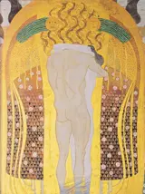

A concert with a story
Guided journeys
One story, told through the music.
Follow the paintings, the places and the written notes, while the recordings carry you from station to station.

Death and the Dies irae
One chant, different kinds of musical inheritance
Gregorian chant · Berlioz · Liszt · Verdi · RachmaninoffFollow the music
How the symphony grew
Larger arguments, changing orchestras, and the meaning of an ending
Haydn · Mozart · Beethoven · Brahms · Bruckner · Tchaikovsky · MahlerFollow the music
Paris, 1900–1913
From suspended piano phrases to the Ballets Russes’ stamping chords
Satie · Debussy · Ravel · StravinskyFollow the musicRachmaninoff in exile
The music he carried, the performances he left
RachmaninoffFollow the musicThe recorded century
What the horn demanded, what the microphone changed
Ruggero Leoncavallo · Beethoven · Chopin · Rachmaninoff · Rimsky-KorsakovFollow the music
Vienna, 1900
Mahler, Klimt and the loosening of a musical centre
Mahler · SchoenbergFollow the music